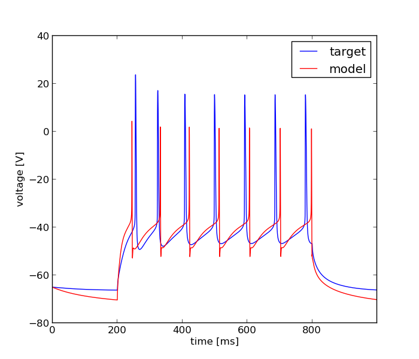

Fri Mar 28 11:30:20 2014
Optimization of ca1pc_model.hoc based on: /home/kali/neuron/optimizer/szabolcsnak/ca1pc_simple/Vinj48_2c_1.dat
Results
| Parameter Name | Minimum | Maximum | Optimum |
|---|---|---|---|
| soma H_CA1pyr_prox gmax_H_CA1pyr_prox | 0.0001 | 0.01 | 0.00607832146398 |
| soma CaN gmax_CaN | 0.0001 | 0.1 | 0.0368085208901 |
| soma CaL gmax_CaL | 0.0001 | 0.1 | 0.0203778015495 |
| soma K_AHP gmax_K_AHP | 1e-06 | 0.01 | 1.68476020459e-06 |
| soma K_C_1D gmax_K_C_1D | 0.0001 | 0.1 | 0.0001 |
| soma K_M gmax_K_M | 0.0001 | 0.1 | 0.000194808783842 |
| soma K_A_prox gmax_K_A_prox | 0.001 | 1.0 | 0.00103177662602 |
| soma K_DR gmax_K_DR | 0.001 | 1.0 | 0.046343123872 |
| soma Na_soma gmax_Na_soma | 0.001 | 1.0 | 0.0332737786213 |
Fitnes: 0.00190498756823

Error Tolerance for x: = None
Size of Population: = 200.0
Accuracy: = None
Mutation Rate: = 0.25
Cooling Rate: = None
Final Temperature: = None
Std. Deviation of Gaussian: = None
Cooling Schedule: = None
boundaries = [[0.0001, 0.0001, 0.0001, 9.9999999999999995e-07, 0.0001, 0.0001, 0.001, 0.001, 0.001], [0.01, 0.10000000000000001, 0.10000000000000001, 0.01, 0.10000000000000001, 0.10000000000000001, 1.0, 1.0, 1.0]]
Number of Generations: = 100.0
evo_strat = Classical EO
seed = 1234.0
Initial Temperature: = None
starting_points = None
Dwell: = None
Mean of Gaussian: = None
Error Tolerance for f: = None
num_inputs = 9
feats = Spike Count, Averaged Squared Error II, Latency to 1st Spike, AP Overshoot, AHP Depth, AP Width
weights = [0.40000000000000002, 0.20000000000000001, 0.10000000000000001, 0.10000000000000001, 0.10000000000000001, 0.10000000000000001]
user function =